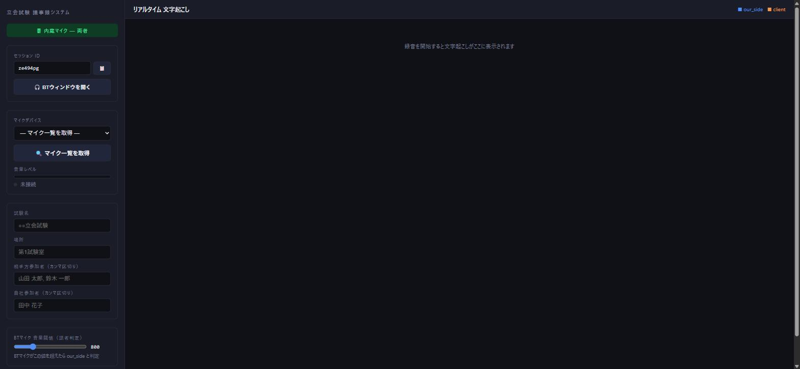
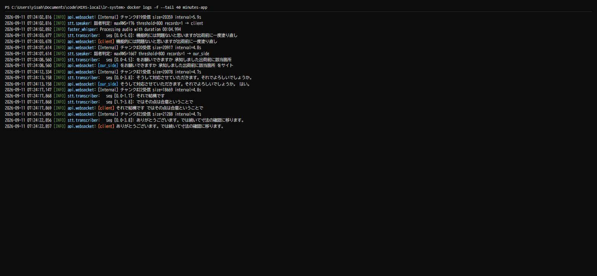
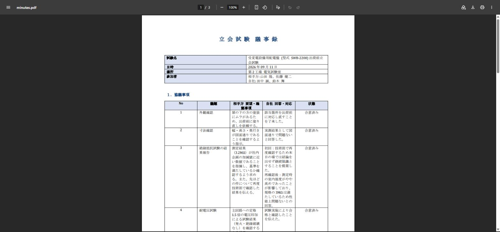

| 名称 | MIRS2602 資料作成(議事録)PoC検証 |
|---|---|
| 番号 | MIRS2602-TEST-0003 |
| 版数 | 最終更新日 | 作成 | 承認 | 改訂記事 |
|---|---|---|---|---|
| A01 | 2026.09.11 | 森 匠未 | 初版 |
MIRS2602-DSGN-0001（企画・基本設計）で立てたPoC計画のうち、音声文字起こし・議事録自動生成に関する仮説・KPIが成立するかを検証する。本資料は、配電盤出荷前立会試験を模した音声シミュレーション試験（LRシステムリポジトリtesting/配下、詳細はtesting/CHANGELOG.md参照）の結果を、資料作成(議事録)PoCの検証結果としてまとめたものである。
実際の工場・立会試験環境での実施が困難であったため、TTS合成音声によるWebSocket直接注入方式でのシミュレーションにより代替検証を行った（詳細は「3. 検証方法」）。
MIRS2602-DSGN-0001「3.2 検証内容（仮説）」および「3.5 成功基準(KPI)」のうち、音声文字起こし・議事録生成に該当する項目を対象とする。
なお、DSGN-0001「3.5 成功基準(KPI)」には「エクセルの見出し行を理解して対応する箇所に移動できる」というKPIも記載されているが、これは配電盤の測定値を成績書へ入力する別機能を想定したものであり、議事録作成を担う本機能の対象範囲外である。エクセルへの入力に関する検証は本資料の対象外とする。
DSGN-0001のKPI（文字起こし精度80%以上）のみでは、生成される議事録が実務で使える水準かどうかを判断するには不足していると考え、開発・検証を進める中で以下を追加のKPIとして定義し、検証対象に加えた。
Claude Codeによって自律的に試験と評価、考察、改善を繰り返し、KPIの達成を目指した。
| 方式 | サーバー無改造のPython直結WebSocket音声注入（testing/inject/run_injection.py）。VOICEVOXによるTTS合成音声（testing/tts/generate_audio.py）を用いて立会試験の対話を再現した。 |
|---|---|
| 短時間シナリオ | script_v1.yaml（配電盤 出荷前立会試験、約8.8分、意図的な状態矛盾および話者誤判定要因を含む）を12回実行し、STT・LLM処理を反復改善した。 |
| 長時間シナリオ（3時間耐久試験） | script_endurance.yaml（受変電設備用配電盤A盤・B盤2面、139ターン、実測約3時間、計測待ち等の無音区間を含む）を3回実行した。 |
| 評価方法 | testing/evaluate/run_eval.pyにより、正解データ（expected_minutes_*.yaml）と生成結果を自動比較。STT文字誤り率(CER)、話者判定精度、協議事項再現率、アクション再現率、状態矛盾解消可否、Stage2 JSON解析失敗回数を算出した。 |
全実行結果の推移はtesting/results/comparison.mdに記録されている。
検証用の合成音声には VOICEVOX:青山龍星、VOICEVOX:玄野武宏、VOICEVOX:剣崎雌雄、VOICEVOX:波音リツ を使用した（各キャラクターの利用規約・クレジット表記の詳細はtesting/CREDITS.md参照）。なお青山龍星は、企業が携わる形で利用する場合は音声ライブラリ提供元（ななはぴ）への事前確認が必要とされており、本資料を明電舎へ正式に提出する際は事前にこの点を確認すること。
| 区分 | KPI | 結果 | 根拠 |
|---|---|---|---|
| DSGN-0001 | 文字起こし精度80%以上 | 達成 | STT文字誤り率(CER)は短時間シナリオ最終確認（smoke_after_prompt_fix）で0.149（精度約85.1%）、3時間耐久試験最終実行（endurance_03）で0.174（精度約82.6%）であり、いずれもKPI(80%以上)を満たした。改善前のbaseline_01では0.316（精度約68.4%）であり、WebMヘッダー切り出し処理の修正（iter4）により大幅に改善した。 |
| 追加 | 協議事項の再現率100% | 達成 | 短時間シナリオ最終確認（smoke_after_prompt_fix）で7/7（100%）、3時間耐久試験最終実行（endurance_03）で11/11（100%）を達成。採用モデル（qwen3.5:9b）での複数回実行で安定して100%を維持している。 |
| 追加 | アクションアイテムの再現率100% | 達成 | 短時間シナリオ・3時間耐久試験（endurance_03）のいずれも3/3（100%）を達成。owner正確性も100%を確認した（deadline表記は「自社」→「自社側」等の表現ゆれによる不一致のみで、内容自体の誤りではない）。 |
| 追加 | 状態矛盾解消（会議中に変化した結論を正しく反映） | 概ね達成 | 短時間シナリオでは採用構成（qwen3.5:9b）にて2回連続成功。3時間耐久試験でも最終実行（endurance_03）で対象箇所（A盤絶縁抵抗: 継続協議→合意済み）の状態矛盾解消を確認し、協議事項の状態正確性は0.909（10/11）まで改善した（初回endurance_01実行時点ではStage1/Stage2の話題統合ロジックの不具合により0.455）。残る1件はtemperature設定下でも生じる実行ごとの変動範囲内と判断している。 |
| 追加 | 3時間規模の長時間試験での安定動作 | 達成 | 3時間規模の耐久試験を計3回フル実行し、最終実行（endurance_03）でCER 0.174、協議事項・アクションアイテム再現率100%を確認した。この過程で短時間試験では顕在化しなかった3件の重大な不具合（STTハルシネーション、Stage2コンテキストウィンドウ超過、話題統合ロジックの誤り）を発見し、いずれも修正・再検証済み（詳細は「6. KPI以外の実用性に関する確認」参照）。 |
| 追加 | VRAM 8GB級GPUでSTT・LLMを同時運用できること | 達成 | STT（faster-whisper large-v3）とLLM（qwen3.5:9b、Ollama）を同時ロードしない逐次管理方式により、生成中のVRAM使用量は5732〜6309MiB（上限8188MiB中）で推移。3回のフル実行を通じて単調増加（リークの兆候）は見られなかった。 |
| 追加 | ローカル完結・外部への意図しないデータ送信が無いこと | 達成 | 依存ライブラリ（huggingface_hub）経由で意図しない外部通信（huggingface.co）が発生していたことを検証中に検出し、環境変数HF_HUB_OFFLINE=1により遮断した。 |
2026年9月11日、上記の検証環境（Docker Desktop + RTX 4060 Ti 8GB）で実際に起動し、短時間シナリオ（script_v1.yaml）の音声注入試験を本資料作成時に改めて実行した際の様子を以下に示す。
Fig.1 メイン画面（起動直後の状態）

http://localhost:8000を開いた直後の状態。左サイドバーに試験情報入力欄・マイク選択・BTマイク音量閾値、右側にリアルタイム文字起こし表示欄が確認できる。
Fig.2 音声注入試験を実行中のサーバーログ

docker logs -f minutes-appで取得した実際のログ。5秒チャンクごとに音声を受信し（[Internal] チャンク#N受信）、話者判定（stt.speaker）、faster-whisperによる文字起こし（stt.transcriber）が行われ、結果が話者ラベル付き（[our_side]/[client]）でブラウザへ送信されるまでの一連の流れが実際に動作していることを示す。
Fig.3 生成された議事録（docx）の内容

HF_HUB_OFFLINE=1）により遮断した。ローカル完結（外部ネットワーク非送信）というシステム要件に対する検証として実施した。DSGN-0001時点のKPI（文字起こし精度80%以上）だけでは、議事録の内容が実際に正しいか（協議事項・アクションアイテムの網羅性、結論の時系列的な正しさ）や、立会試験の実運用（数時間規模の長時間動作、ハードウェア制約、守秘性）に耐えられるかを判断できないと考え、「2.2 追加KPI」を新たに定義して検証を行った。結果として、DSGN-0001のKPIだけでは見えなかった3件の重大な不具合（STTハルシネーション、コンテキストウィンドウ超過、話題統合ロジックの誤り）を追加検証の過程で発見・修正することができた。
これまでの検証はTTS合成音声によるクリアな音声のみで行っており、実際の工場環境（雑音・複数人の同時発言）はまだ検証できていない。今後は実際の立会試験環境での実証が必要である。
BTイヤホンを自社側1名のみが装着する運用では、装着していない自社側発話者の発言がclient（相手方）と誤判定される制約が既知の限界として残っている。全自社側参加者へのBTイヤホン装着を運用ルールとするか、音声内容ベースの話者ダイアライゼーション（pyannote等）への変更を今後検討する。また、音声を5秒ごとに機械的に区切って文字起こしする設計に起因する文断片化がCER残存要因（約15〜17%）となっており、チャンク間オーバーラップ処理によるさらなる改善余地がある。
出力形式については、現時点ではdocx（Word形式）で議事録を生成する方式としている。明電舎側からExcelファイルを指定されたため詳細フォーマットが確定した際に出力形式をExcelファイルに変更する。
testing/CHANGELOG.md: 調整記録、testing/results/comparison.md: 全実行結果比較表）